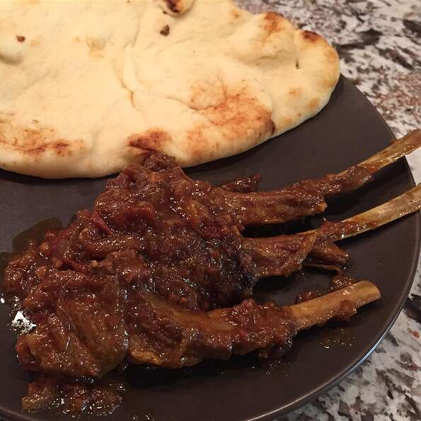

This lamb chop dish has a delicious sweet and savory gravy made of caramelized onions. Goes great with some naan or rice.
Heat oil in a large skillet over medium heat. Brown lamb chops on all sides, about 5 minutes. Remove and set aside.
Stir in green cardamom, black cardamom, bay leaves, cinnamon stick, and cumin seeds until fragrant, about 1 minute. Add onions, garlic, and ginger; cook until onion is golden brown, about 10 minutes. Mix in chile powder, turmeric, and salt; stir-fry for 1 minute. Add browned lamb, water, tomatoes, and chile peppers. Simmer over low heat until lamb is tender and all water has evaporated and onions have disintegrated into a thick gravy, about 40 minutes. Serve garnished with cilantro.